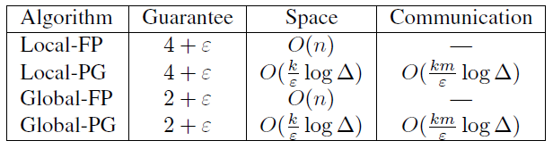

2k words in total, 8 minutes required. Cormode, Graham, S. Muthukrishnan, and Wei Zhuang. “Conquering the Divide: Continuous Clustering of Distributed Data Streams.” In 2007 IEEE 23rd International Conference on Data Engineering, 1036–45, 2007. https://doi.org/10.1109/ICDE.2007.368962. 1. 聚类的概念老生常谈的聚类 (clustering) 问题，在学界有150年以上的历史，在各类数据科学和工程问题中有广泛应用。 简单讲，聚类就是把数据集合划入到不相交的子集中，使子集内的点相似，而跨子集的点不相似。精确形式化定义的聚类问题被认为是NP-hard的[1]。因而，大部分算法，如K-means，DBSCAN，BIRCH等，都致力于得到实践中良好的聚类结果。 此外，一些工作研究的是聚类优化中的近似保证 (guaranteed approximation)，针对的聚类优化准则也不同，比如 k-center (minimizing the maximum radius/diameter of any cluster)： radius即聚类内点到聚类中心的距离，diameter即聚类内最大的两点间距离 k-median (minimizing the sum of distances from each point to its cluster center) 这篇文章主要针对k-center的场景，并且假定discrete clustering，即center必须来自于数据集，而不是度量空间下生成的任意点 (被称之为continuous clustering)。 针对于k-center，radius和diameter这两个优化目标是紧密相关的，这是因为后者最多是前者的两倍。 2. 集中式算法这里主要关注的是guaranteed $\alpha$-approximation算法，即cost (损失) 是最优解的$\alpha$倍。 2.1 Furthest Point Algorithm思想比较简单，需要$k$轮，每一轮选择一个点$p$为center，这个点到现有所有centers的距离是候选中最大的。如第$i+1$轮， $k$轮后，得到的结果针对于最优结果是2-factor approximation。 证明：假设多进行一个$k+1$轮，得到$k+1$个点，它们间最短距离为$D$，则最优聚类结果的diameter至少为$D$ (两个距离为$D$的点在最优结果中必会出现在一个cluster中)。而之前得到的$k$轮后的聚类结果，保证了radius为$D$，即diameter最大为$2D$。因此，approximation factor为2。 这个算法的复杂度为$O(kn)$，$n$为点的总数，相当于每一轮都要扫一下候选集内的点。 2.2 Parallel Guessing Algorithm该算法相对于Furthest Point，提供相对更差的approximation factor $2+\epsilon$，但提高了计算效率，只需要one pass。 思想如下，假定$R$为最优结果的radius的下界，先随机加入一个点，随后扫描点集合，如果一个点$p$的距离 比最优radius $R$要大，则把该点选为center。 由于$R$是未知的，采取multiple guesses，令 $R$ 为 $(1 + \epsilon/2)$, $(1 + \epsilon/2)^2$, $(1 + \epsilon/2)^3$, …，并将guesses并行运行。 Parallel Guessing Algorithm提供$2+\epsilon$的approximation factor，其存储点数最多为$O(k/\epsilon \log \Delta)$，其中$\Delta$为集合中两点最远距离和最近距离的比值。 证明：当猜测的$R < R_{opt}$时，会产生多于$k$个centers。当$R \geq 2 R_{opt}$时，会产生最多$k$个centers。而$R_{opt} \leq R < 2 R_{opt}$ 则都有可能。随着每个guess是前一个guess的$(1 + \epsilon/2)$倍，不断放大，我们知道我们的guess不可能超过$2 R_{opt} (1 + \epsilon/2)$，则我们找到的radius必最多是最优解的$(2 + \epsilon)$倍。由于guess的数量不会超过$O(\log_{1 + \epsilon/2} \Delta) = O(1/\epsilon \log \Delta)$，因为小于最小距离和大于最大距离是不需要guess的，这时候只需要按照$1 + \epsilon/2$的倍数来放大，最大guess的数量就按照log来计算。每个guess最多保存$k$个点，则总共需要保存$O(k/\epsilon \log \Delta)$个点。每个新的点被处理时，需要进行$O(k/\epsilon \log \Delta)$个比较。 这个算法是one pass的，所以适合流场景，并且存储和点数量无关。它的性能会受到点到达顺序的影响，但是$2+\epsilon$的approximation是始终成立的。 2.3 Merging Clusterings直接对clustering结果进行clustering的approximation满足以下： 令点集$P$的可相交子集为$\{ P_1, \ldots, P_m \}$，得到的$\alpha$-approximation k-centers集合为$\{ C_1, \ldots, C_m \}$。对$C_i$的union进行$\beta$-approximation clustering，则其得到的k-centers是$P$上最优结果的 $(\alpha+\beta)$-approximation。 证明： 令$R_P$和$R_C$为各自数据集上的最优聚类的radius，则有 $R_C \leq R_P$一直成立因为$C_i$的并是$P$的子集。 3. Continuous Distributed Clustering3.1 Merging Local Solutions该算法思路为，每个remote site对本地点进行聚类，只在必要时进行更新。 3.1.1 Local FP (Furthest Point)site $i$ 以 $R_i$来维护聚类，当一个新点满足$d(C(p), p) \leq (1+\epsilon/2)R_i$，则最大的approximation为$2+\epsilon$，只需要把点合并到最近的$C(p)$。否则，需要reclustering，这时所有的点需要保存。每次reclustering会产生$O(k)$个点发送到centralized node。 根据上节提到的Merging Clusterings，在centralized node上的approximation为$2+(2+\epsilon)$。 由于最终要merge，可以考虑以global和所有local models的最大radius来延迟reclustering的时机，但这需要对最大radius进行广播。 3.1.2 Local PG (Parallel Guessing)site $i$ 以 最小的、生成不超过$k$个cluster的$R_i$来维护聚类。当$R_i$不再能满足新的到达点时，放大当前的$R_i$到$(1+\epsilon/2)$倍，并且和centralized进行通信。如果当前的guess少于$k$个centers并且出现了一个新的center，新的center会发送给centralized。同样，centralized node的approximation为$2+(2+\epsilon)$。 Site的存储为$O(k/\epsilon \log \Delta)$，则总共的通讯开销为$O(k m/\epsilon \log \Delta)$。 3.2 Maintaining Global Solutions相比于remote site的方案，global方案有更低的approximation factor，即$2+\epsilon$。 3.2.1 Global FPcoordinator负责广播到各个site信息，并计算谁是广播的点的真正的最远的点，并把这个点再次广播，共进行$k+1$轮，直到选择出$k$个centers。 进入到monitoring phase，如果一个点打破了$R$的条件，则coordinator进行reclustering。每次reclustering需要发送$O(mk)$个点：remote site必须要保存每个input点以保证能持续进行reclustering。 3.2.2 Global PGcoordinator和remote site都保持multiple guesses。当一个remote site观测到一个新点，不能被某个$R$满足时，这个点被发送到coordinator。 coordinator判定这个点$p$是否可以被加入到remote site当前$R$中。 3.3 SummarySummary Global algorithms have better accuracy guarantees PG-based algorithms have smaller space requirements and communication guarantees 4. 扩展4.1 Dynamic Point Sets考虑动态场景，即点可以加入也可以被删除。加入现在选出来的$k+1$个点都没有被删除，则cost不会下降。因此只需要检测是否有其中之一被删除，一旦如此，则需要进行recluster。 一个移动的点则可以被看做是delete+reinsert。而sliding window的场景也类似。 4.2 Variable Numbers of Clusters针对FP算法，centralized端可以选择一个小于remote site的$k$的值，即$k’$。则其在处理时只需要保留前$k’$个centers。 类似，针对PG算法，remote site可以选用更大的$k$来决定最好的guess，在有许多parallel guesses的情况下，centralized node可以用$k’$的guess来决定$k’$ centers。 对于local算法，可以本地用$k$，centralized用$k’$。对于global算法，如上所示，可以从$k$个centers中选出需要的$k’$个。 4.3 1-center in Geometric Spaces1-center即求一个minimum enclosing ball。但是上述随机选择第一个点的方法的approximation太大了。这里的特殊优化建议参照原文，稍显复杂。 扩展阅读1.T. Feder and D. H. Greene. Optimal algorithms for approximate clustering. In STOC, 1988. ↩ ← Previous Post Next Post→ Table of Contents 1. 聚类的概念2. 集中式算法2.1 Furthest Point Algorithm2.2 Parallel Guessing Algorithm2.3 Merging Clusterings3. Continuous Distributed Clustering3.1 Merging Local Solutions3.1.1 Local FP (Furthest Point)3.1.2 Local PG (Parallel Guessing)3.2 Maintaining Global Solutions3.2.1 Global FP3.2.2 Global PG3.3 Summary4. 扩展4.1 Dynamic Point Sets4.2 Variable Numbers of Clusters4.3 1-center in Geometric Spaces扩展阅读